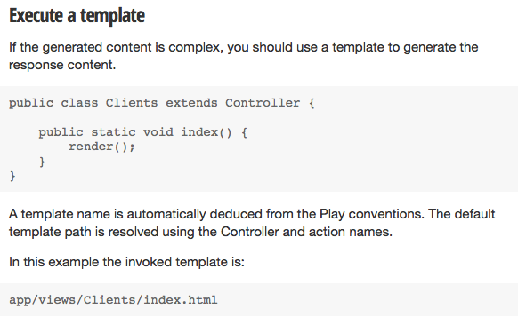
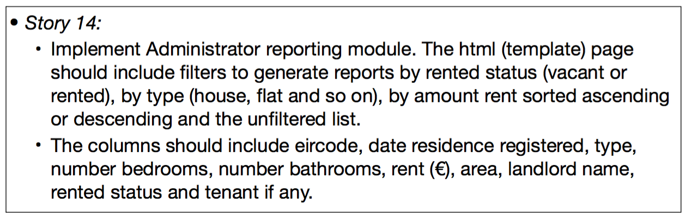
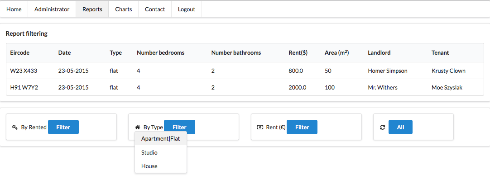
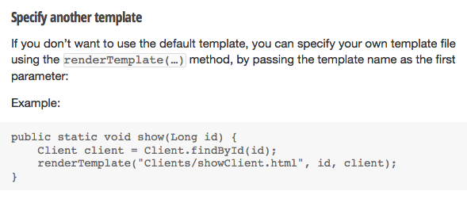

This short lab provides some hints on how to implement the more difficult parts of the assignment. The topics discussed are Ajax, Global abatement (maps), validation and manipulation of Semantic controls (dropdown and edit box), dynamic updating of map markers, specifying alternative Play templates and, lastly, deployment of a non-master branch to Heroku.
The existing labs and presentations contain all the material required to implement stories in levels basic and good. These include all stories in the range 1 to 10.
Students attempting the levels excellent and outstanding will likely find it necessary to carry out some research in areas such as Ajax, making dynamic changes to Semantic controls (dropdowns and input controls) and Google maps.
Some guidelines are supplied in this lab.
The following code shows how to remove a Google map from the global scope (namespace) by creating a global variable, wrapping the map code in an immediately invokable function expression (IIFE) and exposing the necessary functionality in a returned anonymous JavaScript object that is assigned to the newly introduced global variable. This is demonstrated in the following code.
const CIRCLEMAP = (function (context) {
let map;
let circle;
const markers = [];
context.onclick = function requestReportCircle() {
const center = circle.getCenter();
const latcenter = center.lat().toString();
const lngcenter = center.lng().toString();
const radius = circle.getRadius().toString();
$('#radius').val(radius);
$('#latcenter').val(latcenter);
$('#lngcenter').val(lngcenter);
};
//...
//...
function initialize() {
// ...
}
function updateMarkers(data) {
//...
}
// public api
return {
initialize,
updateMarkers,
};
}(this));
google.maps.event.addDomListener(window, 'load', CIRCLEMAP.initialize);Here we show how to validate a Semantic UI (version 2) dropdown.
$('.ui.dropdown').dropdown('clear'); // 'clear' restores placeholder value
$('.ui.form.donate').form({
fields : {
amountDonated : {
identifier : 'amountDonated',
rules : [{
type : 'empty',
prompt : 'Please select an amount to donate'
},],
},
},
});Following on from the previous step, on successful validation, an Ajax call may follow:
$('.ui.dropdown').dropdown('clear'); // This restores the placeholder
$('.ui.form.donate').form({
fields: {
amountDonated: {
identifier: 'amountDonated',
rules: [{
type: 'empty',
prompt: 'Please select an amount to donate',
}]
},
},
onSuccess: function (event, fields) {
submitForm();
event.preventDefault();
},
});
function submitForm() {
var formData = $('.ui.form.donate').serialize();
console.log('formData: ', formData);
$.ajax({
type: 'POST',
url: '/donation/donate',
data: formData,
success: function (response) {
console.log('donate server response :' + response);
},
});
}Here is the associated html and controller code:
<form class="ui form donate">
<div class="ui selection dropdown" id="landlord">
<input name="amountDonated" type="hidden">
<div class="default text">Amount</div>
<i class="dropdown icon"></i>
<div class="menu">
<div class="item" data-value="100">$100</div>
<div class="item" data-value="500">$500</div>
<div class="item" data-value="1000">$1000</div>
</div>
</div>
<div class="ui blue submit button">Donate <i class="add icon"></i></div>
<div class="ui error message"></div>
</form>
<script src="@{'/public/javascripts/dropdown.js'}"></script>package controllers;
import play.*;
import play.mvc.*;
import com.google.gson.Gson;
import com.google.gson.GsonBuilder;
import models.*;
public class Application extends Controller
{
static Gson gson = new GsonBuilder().create();
public static void index()
{
render();
}
public static void donate(long amountDonated)
{
renderJSON(gson.toJson(amountDonated));
}
}Here is sample code showing how to dynamically remove an entry from a dropdown.
An Ajax call retrieves a hardcoded name from the server.
If this name is present in the dropdown content then that item is deleted from the dropdown.
To exercise:
/**
* Semantic ui 2 validation applied.
* Ajax call receives donor named Homer.
* This name checked against dropdown content.
* If match found, Homer removed from dropdown.
* Placeholder restored in dropdown (Donor).
*/
$('.ui.dropdown').dropdown('clear');
$('.ui.form.donate').form({
fields : {
name : {
identifier : 'name',
rules : [{
type : 'empty',
prompt : 'Please select a dropdown entry'
},],
},
},
onSuccess : function(event, fields) {
submitForm();
event.preventDefault();
},
});
function submitForm() {
var formData = $('.ui.form.donate').serialize(); // Here this includes donor selected in dropdown
console.log('formData: ', formData);
$.ajax({
type : 'POST',
url : '/donation/donate', // see the routes file and Application.donate.
data : formData,
success : function(response) { // See Application.donate: response hardwired 'Homer'
console.log('donate server response :' + response);
dropdownDonorClear(response);
}
});
}
function dropdownDonorClear(name) {
let $obj = $('.item.name');
for (let i = 0; i < $obj.length; i += 1) { // Iterate the list of dropdown names.
if($obj[i].getAttribute('data-value').localeCompare(name) == 0) { // If match found,
$obj[i].remove(); // Remove the argument Donor from dropdown (hardwired in Application.donate).
$('.ui.dropdown.names').dropdown('clear'); // Restore the dropdown placeholder (Donor).
break;
}
}
}The html and java code follows here:
#{extends 'main.html' /}
#{set title:'Home' /}
<form class="ui form donate">
<div class="ui selection dropdown names">
<input name="name" type="hidden">
<div class="default text">Donor</div>
<i class="dropdown icon"></i>
<div class="menu donor">
#{list items: names, as: 'name'}
<div class="item name" data-value="${name}">${name}</div>
#{/list}
</div>
</div>
<div class="ui blue submit button">Donate <i class="add icon"></i></div>
<div class="ui error message"></div>
</form>
<script src="@{'/public/javascripts/dropdown.js'}"></script>package controllers;
import play.*;
import play.mvc.*;
import java.util.*;
import com.google.gson.Gson;
import com.google.gson.GsonBuilder;
import models.*;
public class Application extends Controller
{
static Gson gson = new GsonBuilder().create();
public static void index()
{
List<String> names = new ArrayList<String>(Arrays.asList("Homer", "Marge", "Bart"));
render(names);
}
public static void donate(String name)
{
String response = gson.toJson("Homer");
renderJSON(response);
}
}Here we present code snippets showing how to differentiate between two dropdowns on same page.
You could introduce the form name attribute as a means of distinguishing between the two dropdowns. The html & script code might then be something like this:
<form class="ui form" name="landlordform">
...
</form>$('.ui.form[name="landlordform"]').form({
// ...
});However, it's much simpler to use a class selector:
<form class="ui form landlord">
//...
</form><form class="ui form tenant">
//...
</form>$('.ui.form.landlord').form({
// ...
});Here are more detailed examples.
A landlord dropdown:
<form class="ui form segment landlord">
<div id="deletelandlord" class="ui fluid selection dropdown landlord">
<input name="email_landlord" type="hidden" id="form_delete_landlord">
<div class="default text">Select landlord to delete</div>
<i class="dropdown icon"></i>
<div class="menu landlord">
#{list items: emailLandlords, as: 'emailLandlord'}
<div class="item landlord" data-value="${emailLandlord}">${emailLandlord}</div>
#{/list}
</div>
</div>
<!-- Possibly other material within form -->
</form>A tenant dropdown on same page:
<form class="ui form segment tenant">
<div id="deletetenant" class="ui fluid selection dropdown">
<input name="email_tenant" type="hidden" id="form_delete_tenant">
<div class="default text">Select tenant to delete</div>
<i class="dropdown icon"></i>
<div class="menu">
#{list items:emailTenants, as: 'emailTenant'}
<div class="item tenant" data-value="${emailTenant}">${emailTenant}</div>
#{/list}
</div>
</div>
<!-- Possibly other material within form -->
</form> $('#deletelandlord').dropdown();As before, a class selector could be used instead of an id:
$('.ui.dropdown.landlord').dropdown(); /**
* Validate delete landlord dropdown
* Invoke controller action and retrieve data using jQuery ajax
*/
$('.ui.form.landlord').form({
//...
});Here is a code snippet applying to a situation where the landlord selected in the dropdown list is deleted and the associated map markers are updated to reflect this change.
function updateLandlord() {
var formData = $('.ui.form.landlord').serialize();
$.ajax({
type: 'POST',
url: '/administrators/deletelandlord',
data: formData,
success: function (response) { // Response contains array marker data
console.log('delete landlord response : ' + response);
$('#notificationLandlord').html('Landlord deleted : ' + $('#form_delete_landlord').val());
// response format: eircode, lat, lng, marker message
ADMIN_MAP.updateMarkers(response);
let email = $('#deletelandlord').dropdown('get text');
removeItemLandlordDropdown(email);
},
});
}
function removeItemLandlordDropdown(email) {
// ...
}Play Framwork documentation on contollers is availabe here.
We are interested in how a template is executed. By this we mean, how does the controller respond to a http request in determining which template or html page is rendered and what data is provided to the page by the controller?
Consider this code snippet taken from the Play documentation:
public class Clients extends Controller {
public static void index() {
render();
}
}This results in a template named index.html being rendered. The template is located in app/views/Clients folder.
This is the default situation.

Recall that the method public static void index() is referred to as an Action.
Now consider a situation where several requests issue from a html page. This applies, for example, to story 14.

This story implementation results in 4 submit buttons on the html page, one for each of the requested reports. The same controller is used in all cases. Therefore the default situation, described above, is no longer adequate. A single action, index, would be insufficient since we require to respond with a different data set for each different request (button press).

We can implement additional actions by using the Play renderTemplate(...) method.

The default action might be used to respond with one particular data set, for example as shown here:
public static void index()
{
...
render(residences);
}Other actions could then be developed to respond with differ data:
public static void byRented(String rentedStatus)
{
// Create list of residences whose rented status match argument.
...
renderTemplate("Reports/index.html", residences);
}Key points:
If you have a branch (named, for example, dev) and wish to push this to your remote repo, then you should do so explicitly. A push executed while master is checked out will not result in dev also being pushed.
If, on resuming, you wish to continue developing on dev, then check it out and update with a pull request before commencing work.
Consider this local situation:
dev.git add .
git commit -m 'story xx ....'
git push # or git push origin masterThis will not result in the branch dev being pushed. To do so switch to dev branch and execute a push:
git checkout dev
git pushAttempting this for the first time will result in the following response:
git push
fatal: The current branch dev has no upstream branch.
To push the current branch and set the remote as upstream, use
git push --set-upstream origin devRun this command as shown below followed by an extract from a typical output:
git push --set-upstream origin dev
Counting objects: 3, done.
Delta compression using up to 4 threads.
Compressing objects: 100% (2/2), done.
Writing objects: 100% (3/3), 291 bytes | 0 bytes/s, done.
Total 3 (delta 1), reused 0 (delta 0)
remote:
remote: Create pull request for dev:
remote: https://bitbucket.org/...
remote:
To git@bitbucket.org:....git
* [new branch] dev -> dev
Branch dev set up to track remote branch dev from origin.You may delete the remote branch as shown in this example:
git push origin --delete dev
To git@bitbucket.org:.....git
- [deleted] devA local branch, dev, may be delete thus:
git checkout master # Cannot delete branch currently checked out.
git branch -d devTo pull the remote branch?
git pull origin devThe response is something along the following lines if local dev is already up-to-date:
From bitbucket.org:....
* branch dev -> FETCH_HEAD
Already up-to-date.When you have completed development on the master branch, create a branch dedicated to the version you will deploy to Heroku as follows:
git checkout -b herokuThis command will create and checkout a local branch named heroku. It is not mandatory that the branch name be heroku - it just seems a logical, self-documenting choice.
Follow the steps in the Heroku lab to create an account and so on.
Still checked out on the heroku branch, execute this command to deploy:
git push heroku heroku:masterThis last command differs from that you would use were you to push your master branch, namely: git push heroku master.